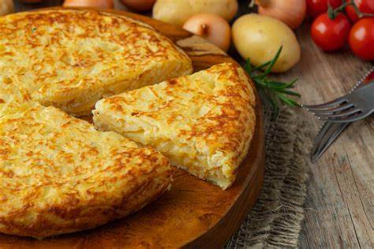
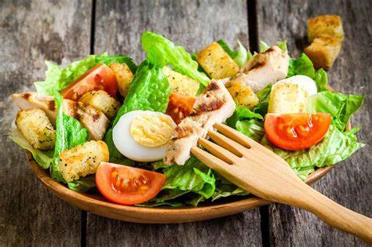
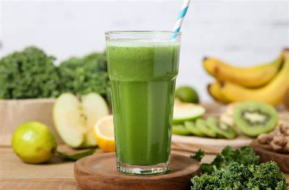

Recetas Saludables

Tortilla Española
Una tortilla fresca y nutritiva, perfecta para el almuerzo o como guarnición.
Ver Receta

Ensalada de Pollo
Ensalada de pollo a la parrilla con vegetales frescos y un toque de hierbas aromáticas.
Ver Receta

Smoothie Verde
Un batido revitalizante de espinacas, plátano y yogur, ideal para empezar el día con energía.
Ver Receta